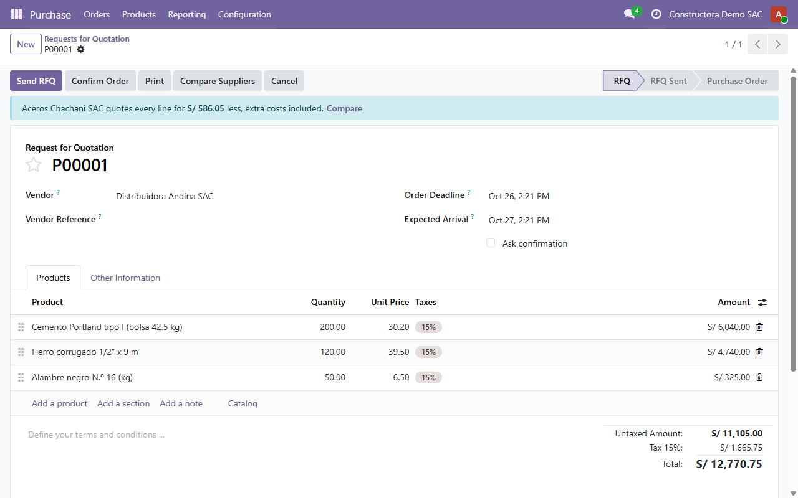
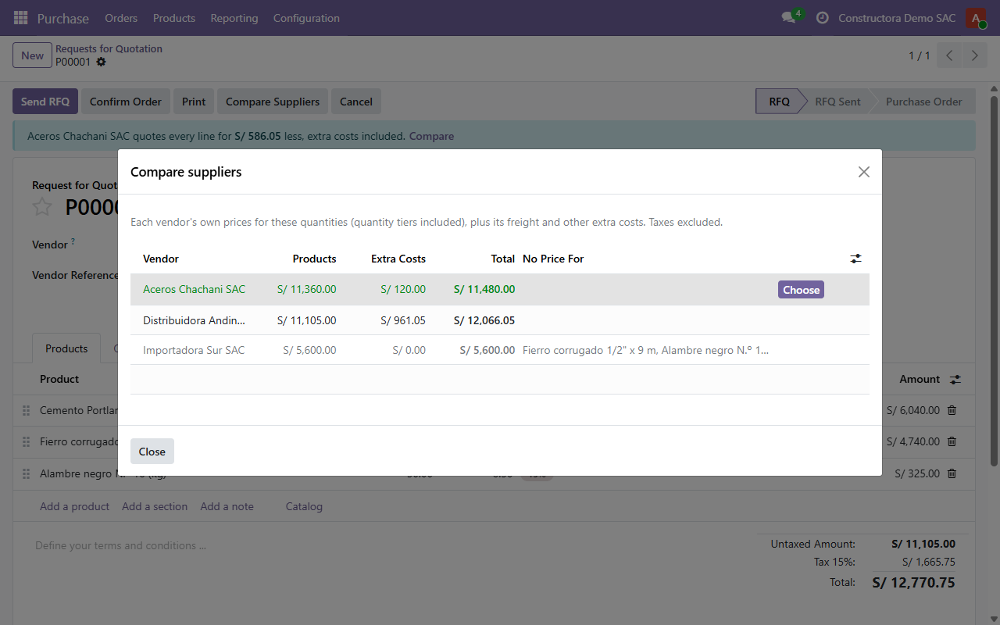
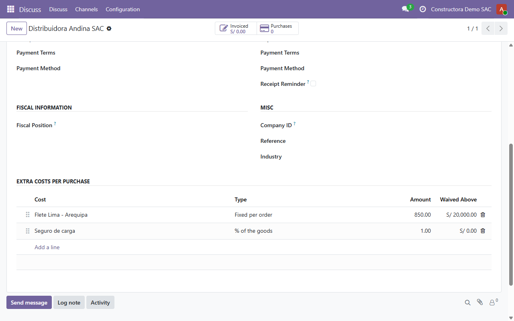

The lowest unit price often isn't the cheapest order. This module prices every line of a request for quotation with each vendor's own quantity tiers, adds that vendor's freight and other extra costs, and tells the buyer on the RFQ when another vendor is cheaper, with the exact saving.
A banner names the cheaper vendor and the saving, extra costs included. It only advises: the buyer decides.

Every vendor ranked by total: products at its own tiered prices, its extra costs, and the total. Vendors with no price for some product are listed last, saying which product. Choose moves the RFQ to that vendor and reprices every line, including prices typed by hand.

On the vendor's Sales & Purchase tab: a fixed amount per order (freight, unloading) or a percentage of the goods (cargo insurance), optionally waived above an order amount (free freight).

Depends only on Purchase. Tested on Odoo 19 Community. Screenshots use fictitious companies and prices.